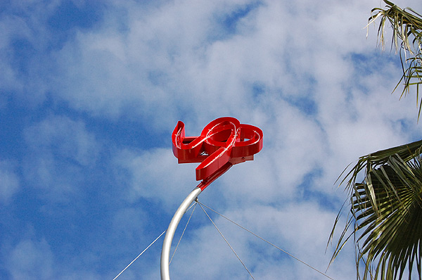
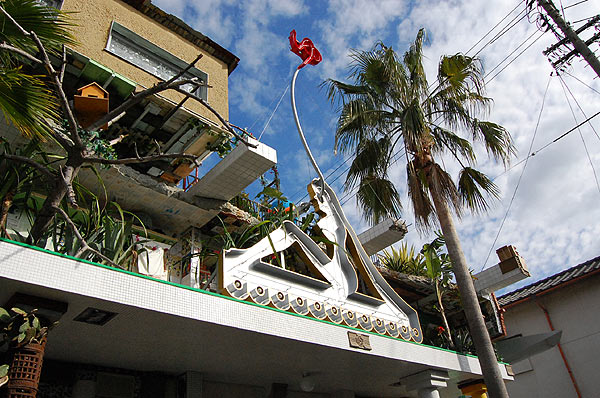
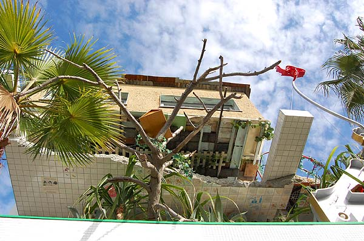
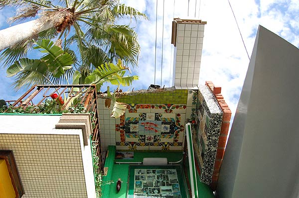
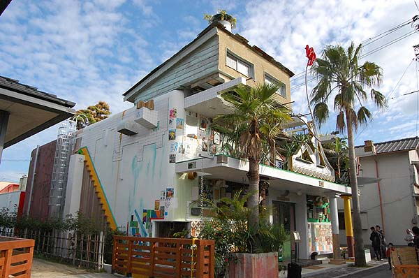
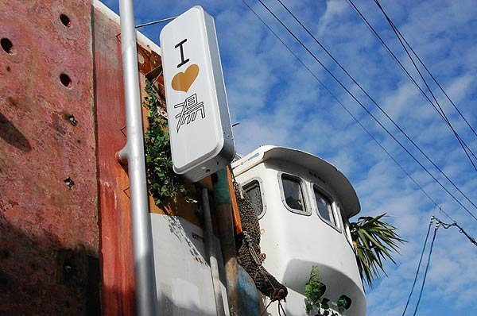

常々、直島に共同浴場があればいいのになぁ…と思っていた。各宿泊施設にお風呂はあるけど、旅の疲れは大きなお風呂じゃないと癒せない。それに、同じものに共感を持って集まってきている人たちと、裸になって一緒の湯につかるというのは、湯気とともに心までひとつになれそう。
もともと文化大混浴が、直島においてその立場を持っていたのだけど（文化大混浴の説明には「ここで世界中の人が集まり、対話し～身体を癒す場に」とある）ベネッセハウスの宿泊客だけしか入浴できなくなったこともあってそういった気持ちの交流ポイントが直島に出来ればいいのにって思っていた。

と、今年直島に銭湯ができたということで、訪問。大竹伸朗による直島銭湯「Iラブ湯」。
島のあちこちには「直島銭湯Iラブ湯」のポスター。しかも老いも若きも人種も違うひとたちが一緒に湯船に入っている写真が入っている。 おおぅ。 まさしく私が理想としているとーり！（でも私的には混浴でもいいと思っている。混浴デーとかあればいいのに） 場所は宮浦港から徒歩1～3分。 たこ焼き「ふうちゃん」の先から裏手に入ってすぐ。建物自体が目印なのでまず見失うことなくたどり着けるはず。

わたしの実家は元水道屋で、家を建て替える前はふんだんにタイルを使ったお風呂やトイレがあったので、このタイル使いが懐かしい。特に石を敷き詰めたような楕円のタイル。 今はユニット式が一般的になってしまって、タイルってノスタルジーの象徴になってしまってる感じ。
住宅街にポッと灯る銭湯。 白昼夢をみているような錯覚すら感じる違和感がありながら、その懐かしさに引き込まれそうな銭湯。
口あけて見上げていたら、港から団体さんがぞろぞろ。腰が曲がったおじーちゃんやおばーちゃんまでもが「すごいネェ」「銭湯？銭湯ネェ～」と、しばらく見ないフィルム式のカメラを取り出してパシャ。じーこじーこ。 デジカメに比べて一枚が重いフィルム。きっと誰かに見せたいんだなぁ。現代アートって世代によって拒絶反応がありそうな気がしていたけど、よろよろと杖をつきつつ、びっくりした顔で見上げているおじーちゃん、おばーちゃんを見ていると、そんなことってないんだなぁと。 そりゃそうか。きっと私も年を取ってからとんでもないものを見にいくはず。

営業は14時から。番台にはいかにもな女性が座っていて（…見た目で人選してるのかしら…？）…と思わざるを得ない感じ。券売機で入湯料とタオルの購入券を買って、脱衣所へ。
脱衣所はそこそこ余裕のある広さ（と言ってもフツーの銭湯と比べてはいけないけど）黒塗りの棺桶のよーなベンチが中心に一つ（覗き窓位置にモニタが組み込まれている）。壁沿いにあるロッカーは充分な数。けど流しに備え付けてあるドライヤーは2つだけ（しかも一つは使い勝手の悪そうなデザインドライヤー）大勢入浴する人がいる場合は、タイミングを見計らってドライヤーを奪取しなければいけなさそう。
トイレはこれまた立派な染め付け便器（この便器や浴場のタイルの制作についてはINAXのルポをどうぞ）。便座は透明で座るときにちょっと躊躇しちゃう。
楽しくって、脱ぎ散らかした洋服をろくに畳まずロッカーに押し込んで浴室に。
わたしは15時過ぎから入ったのだけど、私の他には2名。男風呂も2～3名って言う感じの音が聞こえた。カコーンカコーンザーザー…銭湯にありがちな反響する桶と水の音とともに、脱力とともに毛穴がひらいていきそうな環境音楽がゆるゆる流れてる。 正面には海女が海に潜っていくタイル絵。浴室の左右を分けるように中心には小ぶりのプールのような浴槽。そしてなんていったって象！！象がいる！男湯と女湯を隔てる壁の上に、門番のように睨みをきかした象！外観も随分夢のような雰囲気を醸し出していたけど、これ以上に夢のよーな、夢でみたことがありそーな銭湯ってあるかしら？